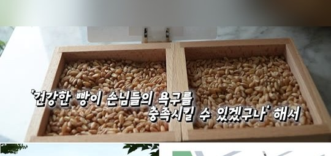
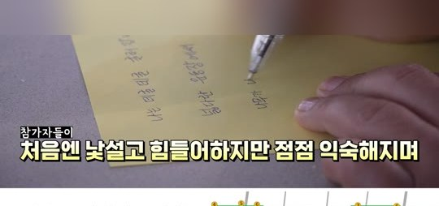
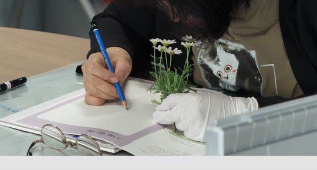
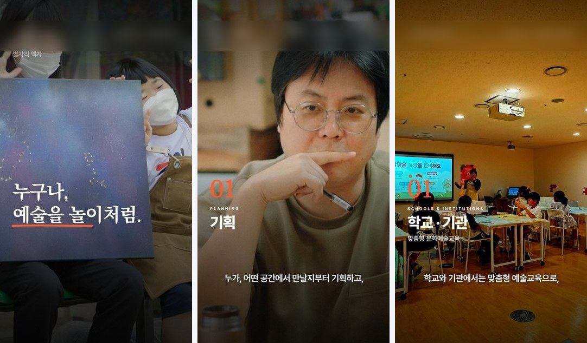
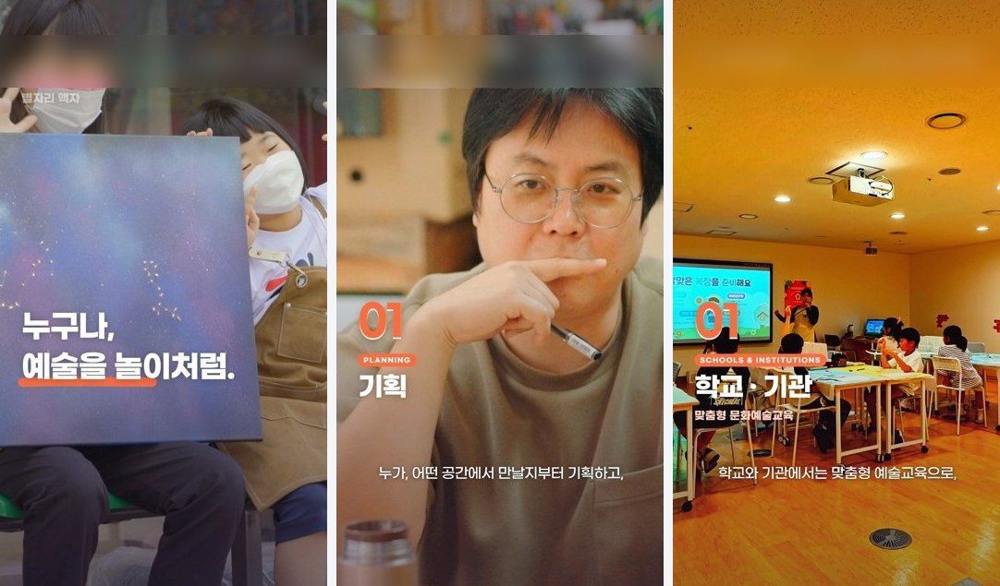
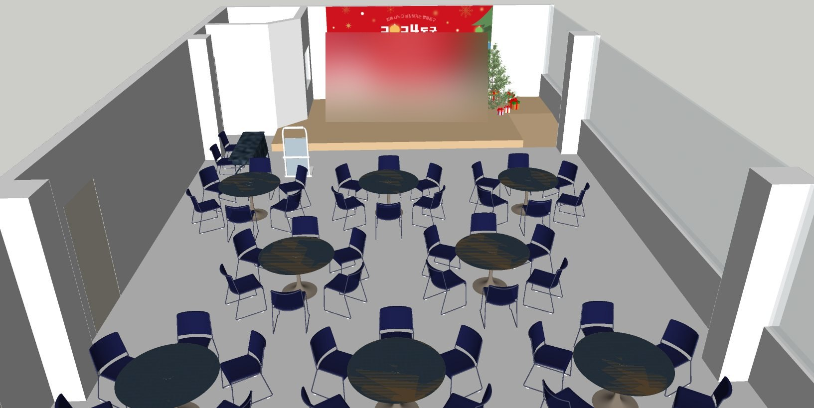
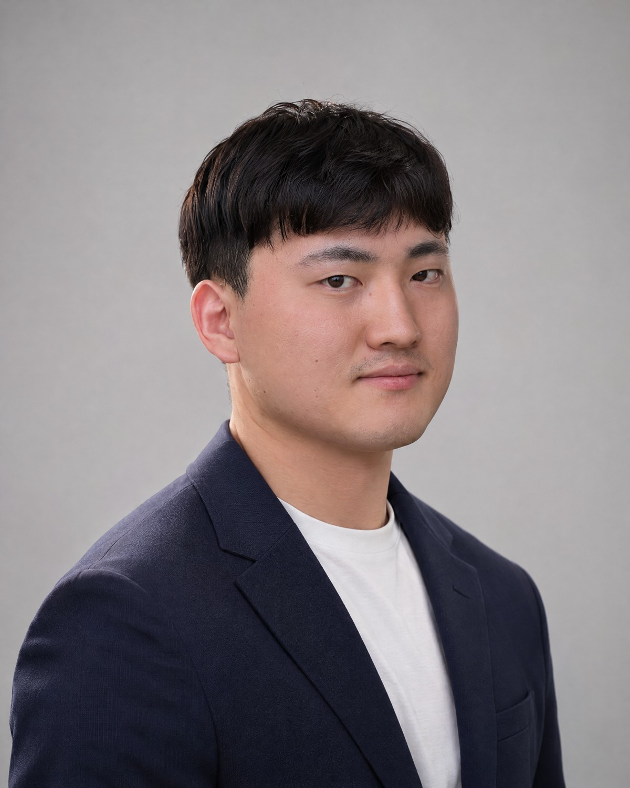
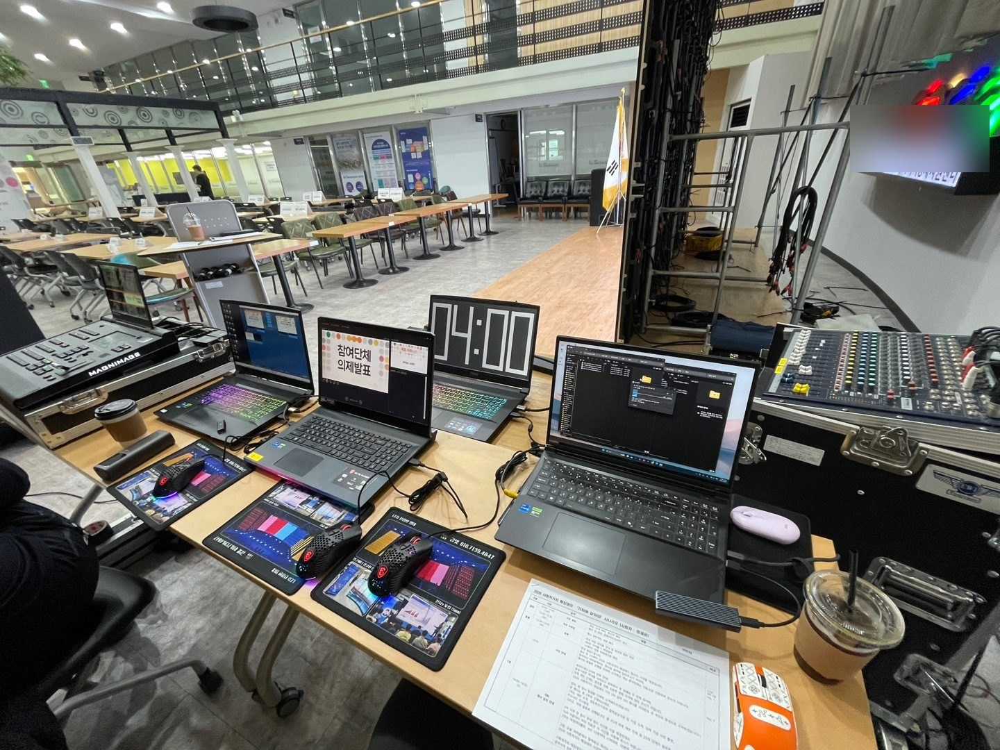
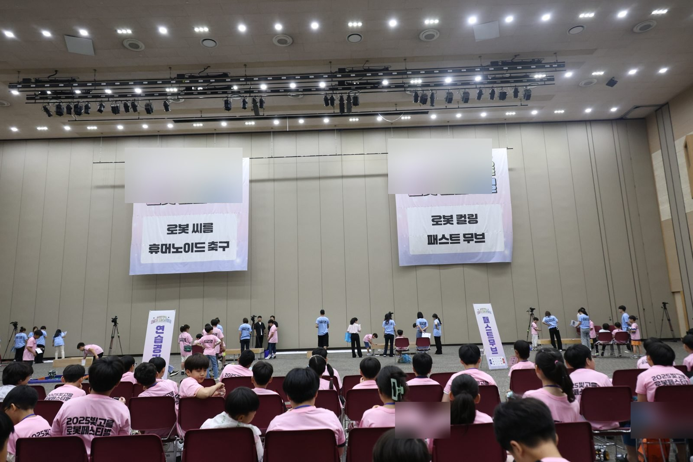

WORKS
대표작
2
디자인 전문기업 소개 모션그래픽



3
엘리베이터 TV 광고 9편
광고 화면에 기업명이 들어 있어 장면 캡처만 싣고, 기업명 부분은 흐리게 처리했습니다.
CASE
숏폼 사례 — 기업 홍보 숏폼 3편
2026 · 세로 9:16 · 24.6초 3편과 20초 버전 3편
02편 발췌본 0:17. 엔드카드 구간은 뺐습니다.
목적 · 대상
지역 사회적경제기업 홍보 지원사업에서 문화예술교육 기업 한 곳에 맞춰 만든 콘텐츠. 학교 · 기관과 체험 참여자에게 프로그램을 알리고, 엔드카드의 체험 · 출강 문의처로 연결합니다.
메시지
01편
보는 예술에서, 해보는 예술로.
02편
아이디어가 경험이 되기까지.
03편
공간에 맞는 예술 경험.
영상 구성
도입0–3초 · 헤드카피
핵심 설명3–17초 · 챕터 01 · 02 · 03과 내레이션 자막
마무리17–22초 · 엔드카드와 문의처
사업 표기22초–
02편 기준. 20초 버전은 같은 구성을 전체 타이밍 비율로 줄였습니다.
편집에서 한 일
- 편마다 단계를 챕터 번호와 상단 진행 표시로 나눔 (02편: 기획 → 제작 → 현장 운영)
- 내레이션을 문장 단위로 끊어 자막 타이밍을 맞춤
- 배경음악의 박자에 맞춰 컷 위치를 정렬
- 기업 제공 원본의 색 편차를 LUT로 맞춤
역할
직접
- 구성 · 대본 (AI 초안 보조)
- 컷 선택 · 편집
- 자막 · 챕터 · 엔드카드 모션
- 색보정 · 음향 믹스
- 편집 파일 패키지
AI 생성
- 내레이션 음성
- 배경음악
기업 제공
- 촬영 원본
- 기존 홍보영상
수정 과정
- v1 → v5 다섯 차례 수정. 수정 요청은 문서로 받아 반영
- 색감 · 텍스트 스타일 변경 (아래 수정 기록)
- 20초 버전 추가 제작
결과
- 납품물 — 24.6초 3편, 20초 3편, 프리미어 편집 패키지 (XML · LUT · 사용 안내)
- 반응 지표 — 송출 · 조회 데이터는 확보하지 못해 싣지 않았습니다.
PROCESS
AI 제작 과정
2026년 작업 기준. AI가 만든 결과물과 직접 판단한 일을 나눠 적었습니다.
| 단계 | 입력 | 산출물 | AI가 한 일 | 직접 한 일 |
|---|---|---|---|---|
| 1메시지 정리 | 컨설팅 보고서 · 전략회의 자료 | 편별 한 줄 메시지 | — | 자료를 읽고 기업별 메시지 선택 |
| 2대본 · 큐시트 | 메시지, 촬영 원본 목록 | 장면 · 내레이션 · 자막 · 음향 큐시트 | 초안 작성 보조 | 문장 · 장면 순서 확정 |
| 3스토리보드 | 큐시트 | 장면 썸네일 시트 | — | 렌더 전 장면 검토 · 확인 |
| 4제작 | 원본 영상, 대본 | 편집본, 모션그래픽, 음향 | 내레이션 음성 합성, 배경음악 생성 | 컷 선택 · 편집, 원본 교체 판단, 모션그래픽, 색보정, 음량 믹스 |
| 5검수 · 납품 | 완성본 | MP4, 프리미어 편집 파일, 사용 안내 | 영상 검수 보조 | 최종 확인, 편집 파일 트랙 구성 |
표는 옆으로 밀어서 볼 수 있습니다.
사용 도구
Claude Code제작 스크립트 작성 · 실행
Gemini TTS내레이션 음성
Lyria 3배경음악
음성 인식내레이션 자막 타이밍
Gemini영상 검수 보조
HTML 렌더 · ffmpeg모션그래픽 · 합성
Premiere ProXML 편집 파일 · LUT
큐시트 예시
1:09.6헌다례
석탑 앞에 정성껏 달인 차를 올리는 헌다례 의식.
2:03.9탑돌이
사부대중이 한 걸음씩 탑을 돌며, 평안과 행복을 발원했습니다.
2:26.7클로징
늘 평안하기를. 탑 앞에서, 그 마음이 다시 이어졌습니다.
다례재 현장스케치 대본 · 큐시트 일부. 지명은 줄였습니다.
편집 파일 납품 구성
V1원본 컷
9:16 크롭 · 확대 효과를 모션 키프레임으로
V2–V4그래픽
가독성 그라데이션, 자막 · 챕터, 엔드카드
A1–A4오디오
내레이션 문장별 클립, 배경음악, 효과음, 현장음
LUT색보정
원본 종류별 LUT 2종과 적용 안내
숏폼 3편 프리미어 편집 패키지 기준. 완성본과 같은 음량(약 −14 LUFS)으로 맞춰 납품.
REVISIONS
수정 기록
수정 전후와 원본 점검 기록
숏폼 색감 · 텍스트 스타일 수정 전후


색채도와 밝기를 올려 화사한 톤으로
헤드카피서체를 더 굵은 고딕으로, 밑줄 색 변경
라벨챕터 · 태그 라벨에 배경색 추가
기존 홍보영상 원본 점검
숏폼에 쓸 기존 홍보영상(1분 43초)을 장면별로 점검해 교체 · 수정 15건, 보류 5건을 타임코드와 교체 후보 원본까지 정리했습니다.
| 구간 | 문제 | 처리 |
|---|---|---|
| 00:51.7 | 영상은 플루이드 아트인데 자막은 다른 키트 이름 | 자막을 장면에 맞게 수정 |
| 00:54.9 | 키트 접사 컷 화질 낮음 · 흔들림 | 같은 장면 4K 원본으로 교체 |
| 01:23 | 화면 흔들림 | 손떨림 보정 |
납품 버전 관리
숏폼 3편 · v1–v5
요청 문서 기준 다섯 차례 수정, 20초 버전 별도
현장스케치 · 3개 버전
내레이션 + 자막 / 자막 없음 / 내레이션 없음
편집 파일 함께 납품
완성본과 같은 구성의 프리미어 시퀀스
CRAFT
제작 역량
편집 · 모션 · 3D 작업과 행사 기록 영상
종교단체 행사 영상
2025 연등 축제 결과보고 영상 (구성 · 내레이션 원고 · 편집), 2026 다례재 현장스케치 2분 38초 · 결과보고 영상
- 이 작업에 적용한 편집 규칙
- 의식 순서를 따라가는 기록 영상이라 컷 3~10초, 같은 컷 재사용 없음
- 연설은 원음으로, 내레이션과 현장음은 겹치지 않게
- 행사 전환은 디졸브
인터뷰 시리즈 오프닝
지역 기업 대표 인터뷰 시리즈 금터뷰 시즌 2
직접 · After Effects · Blender종합성과영상
지원사업 한 해 결과를 2분 28초로 정리
직접 · AI 제작 과정 적용행사용 루핑 백드롭
초광폭 LED 6200×2160 무대 배경 영상
직접 제작
행사장 3D 배치도
부스 · 무대 배치를 3D로 시각화
직접 제작도구 · 경력
| Premiere Pro | 숏폼 · 기록 영상 편집, XML 편집 파일 · LUT 납품 |
| After Effects | 인터뷰 시리즈 오프닝 모션 |
| Blender | 3D 모델링 · 애니메이팅, 인터뷰 오프닝, 개인 작업에서 3D와 AI를 결합한 제품 설계 · 영상 |
| Illustrator · 한글 | 디자인 · 문서 작업 |
| Claude Code | AI 제작 과정 스크립트, 회사 홈페이지 리뉴얼 |
| 3D 애니메이션 | 전) 게일스튜디오 3D 애니메이터 — 참여 작품 타요, 뽀로로, 나노리스트 등 · 조선대학교 만화애니메이션학과 졸업, 3D 애니메이션 전공 |
자기 평가 숙련도: Premiere Pro · Blender · Illustrator · 한글 · Claude Code 상, After Effects 중
CAREER
경력 · 행사 운영

임승우
- ㈜비제로스튜디오 운영팀 매니저 2024.03 – 2026.11
- 게일스튜디오 3D 애니메이션 애니메이터
- 조선대학교 만화애니메이션학과 졸업 · 3D 애니메이션 전공
숫자
본인 제작 · 운영 (납품 기록 기준 본인 집계 추산)
40편 안팎
제작한 영상
20건 안팎
운영에 참여한 행사
참여 사업 전체 (팀 수행 · 사업 결과보고서 기준)
3년 연속
같은 지원사업 수행
12개사
지원사업 참여 기업 합계
사업 운영 — 사회적경제기업 홍보 지원사업
| 연도 | 사업 방식 | 사업 전체 실적 | 내 역할 |
|---|---|---|---|
| 2024 | 5개사 · 임직원 워크숍으로 이야기 발굴 | 콘텐츠 9종 187건 (팀 제작 전체) | 영상 기획안, 엘리베이터 광고 9편 제작 |
| 2025 | 4개사 · 버스 광고 도입, 성과전시회 | 콘텐츠 7종 43건 (팀 제작 전체) | 엘리베이터 광고 영상 제작 |
| 2026 | 3개사 · 전문가 진단 후 기업이 홍보 수단 선택 | 3개사 컨설팅 · 전략회의 완료 (10월 30일 중간 집계) | 사업 운영 · 콘텐츠 제작 주도 |
2025년 참여 기업 설문의 “홍보 단계를 기업이 선택하고 싶다”는 의견을 2026년 사업 구조(진단 → 전략회의 → 성과지표 → 제작)에 반영했습니다.
행사 운영
일정
사전 답사, 일정표 · 체크리스트 작성, 입찰 운영기획안과 발표
협업
참여 기업 · 협력기관과 진행 순서 조율, 공간 구성도 · 3D 배치도 공유
현장 대응
음향, 화면 중계 · LED, 라이브 방송 스위처 운영
| 행사 | 시기 | 역할 |
|---|---|---|
| 어린이 로봇 페스티벌 | 2025.06 | 운영기획안 · 입찰 발표 · 수주 · 운영 주도 |
| 사회적가치 매칭 행사 | 2025.03 · 2026.03 | 2025 음향 · 현장 시스템 참여, 2026 운영 주도 |
| 소셜임팩트 IR 대회 | 2024.11 | 운영 주도 · 화면 중계 · 음향 · 조명 |
| 관광기업 홍보 라이브커머스 | 2024 | 참여 — 현장 촬영감독, 스위처 · 중계 시스템 운영, 제품 디자인 · 배너 제작 |
| 네트워킹 행사 · 워크숍 투어 · 에너지 캠프 | 2024.12 – 2026.07 | 운영 주도 |


연혁
2024
- 인터뷰 시리즈 금터뷰 시즌 1
- 홍보 지원사업 1년 차 참여
- 관광기업 라이브커머스 참여
- 지역 농산물 브랜드 홍보 주도
- IR 대회 · 네트워킹 행사 주도
2025
- 금터뷰 시즌 2 오프닝 제작
- 매칭 행사 참여
- 어린이 로봇 페스티벌 주도
- 홍보 지원사업 2년 차 참여
- 연등 축제 결과보고 영상 주도
- 협치기구 워크숍 투어 주도
2026
- 매칭 행사 주도
- 홍보 지원사업 3년 차 주도
- 에너지 캠프 주도
- 다례재 현장스케치 · 결과보고 주도
- 회사 홈페이지 리뉴얼 주도
CONTACT
연락처
이름임승우
수록한 작업물은 ㈜비제로스튜디오 재직 중 수행한 프로젝트이며, 포트폴리오 용도로만 사용합니다. 발주처 · 기업명은 가렸습니다.